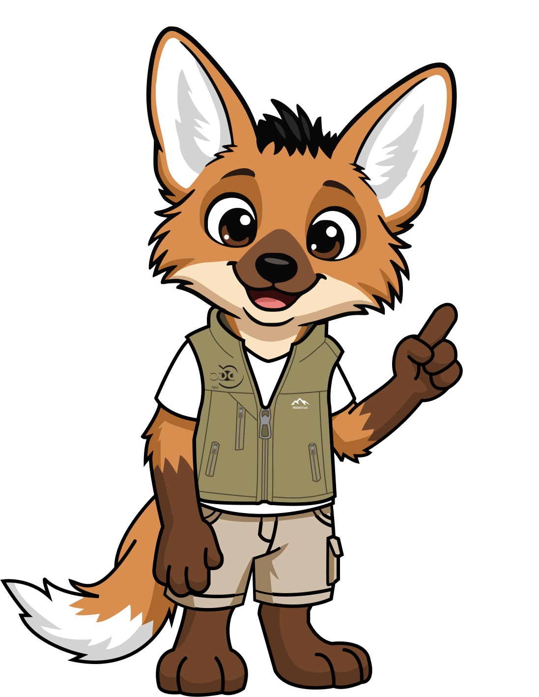

O vídeo ainda não foi adicionado. Consulte o tutorial do projeto.
Animais da região
Toque em um animal para conhecê-lo e ouvir seu som.

O vídeo ainda não foi adicionado. Consulte o tutorial do projeto.
Toque em um animal para conhecê-lo e ouvir seu som.